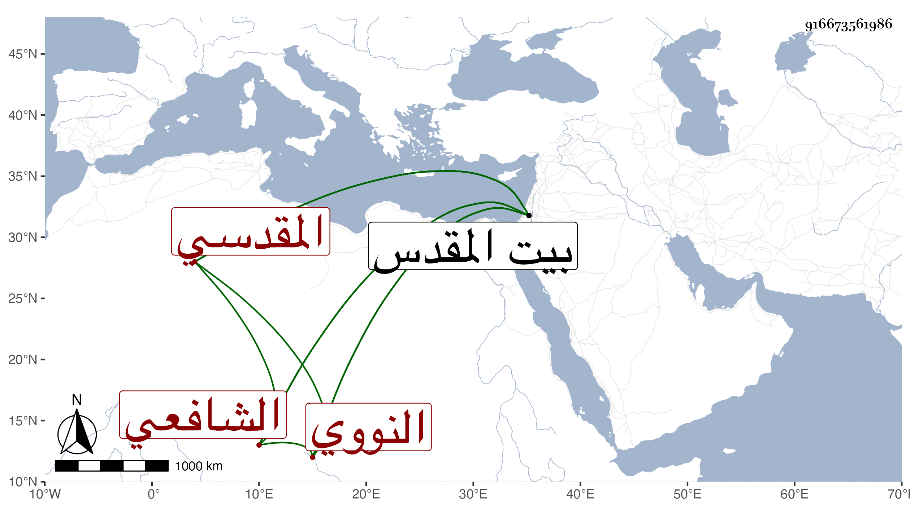

0902Sakhawi.DawLamic.ITO20230111-ara1.EIS1600.916673561986
Biography ID: 916673561986
764
عبد القادر بن محمد بن حسن الزين النووي الأصل المقدسي الشافعي ويعرف بالنووي . ولد في أول القرن تقريبا ببيت المقدس ونشأ به فقرأ القرآن عند سالم الحوراني وناصر الدين محمد السخاوي أخي الغرس خليل ، وحفظ الالمام في أحاديث الأحكام لابن دقيق العيد والشاطبية والمنهاج الفرعي ومختصر ابن الحاجب الأصلي وألفية ابن مالك وعرض ما عدا الأول على الشمس البرماوي وابن الزهري وابن حجي والبرهان خطيب عذراء والغزي والبرشكي وجماعة وتفقه بالشهاب بن حامد وأخذ العربية عن العماد بن شرف وصحب خليفة المغربي وغيره واجتمع بالشيخ محمد القادري وابن رسلان وابجد أحد المجاذيب وهو أول من صحبه في آخرين وسمع علي القبابي والتدمري وابن الجزري وكذا سمع بعض الترمذي على محمد بن أبي بكر بن كريم العطار وتنزل في منفقهة للصلاحية وتصدى لاقراء الطلبة فانتفعوا بتعليمه وتأدبوا بهديه وتفهيمه وما قرأ عليه أحد إلا وانتفع فكان ذلك من عنوان صلاحه ، وقد لقيته ببيت المقدس وانتفعت بدعواته ومجالسته وأضافني وقرأت عليه شيئا من الحلية ، وكان فاضلا صالحا متقشفا زاهدا ورعا قانعا كثير المراقبة والخوف منجمعا عن الناس مقبلا على العبادة وأفعال الخير متوددا قائما على محفوظاته بحيث لا يشذ عنه منها شيء وإذا اختلف أهل بلده في شيء من ألفاظها خصوصا المنهاج راجعوه ومحاسنه جمة قل أن ترى الأعين في معناه مثله . مات في شعبان سنة إحدى وسبعين ببيت المقدس رحمه الله وإيانا ونفعنا به .
